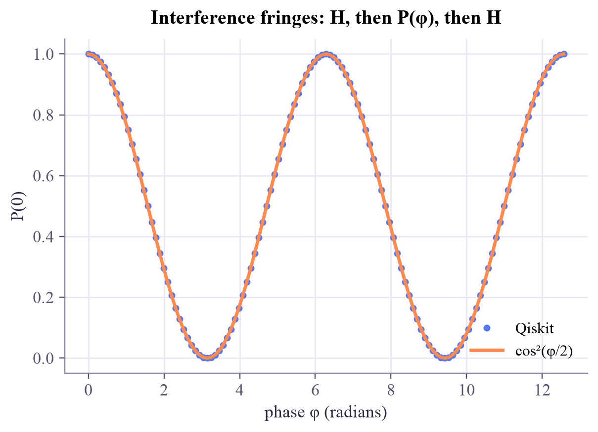
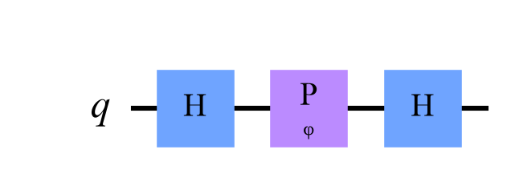

H: amplitudes [0.707 0.707] -> P(0) = 0.50
H, H: amplitudes [1. 0.] -> P(0) = 1.00
H, Z, H: amplitudes [0. 1.] -> P(0) = 0.00
Quantum Computing
 about 11 min
about 11 min qc-w3d3.ipynb
qc-w3d3.ipynb
Interference: when amplitudes cancel
Add the amplitudes of every path, then square. Paths can cancel, and that is where quantum computing gets its power.
In this lesson you will
- Compute an outcome's amplitude by adding the amplitudes of all paths to it
- Explain why H followed by H always gives 0
- Make interference fringes with a phase gate in Qiskit
Warm-up
1 minNoise-cancelling headphones

Noise-cancelling headphones play a sound wave that is the exact opposite of the noise: peak meets trough and the two cancel to silence. You have met the mystery "H then H always gives 0" twice now. Today you find out it is exactly this kind of cancellation, happening to amplitudes, and you learn to control it.
Big idea
4 minAdd amplitudes, then square
Think of a circuit as a set of paths. After one H, the qubit takes both the 0 path and the 1 path, each with amplitude . The second H splits each path again, so there are two routes to each outcome. The rule of quantum mechanics is:
Each route multiplies the amplitudes along it. H has one minus sign, for going from 1 to 1. So:
- to outcome 0: (the paths reinforce)
- to outcome 1: (the paths cancel)
Ordinary probabilities can't do this: they are never negative, so adding them never gives less. Amplitudes can point in opposite directions, so they can cancel. That is interference.
Now put a phase on the 1 path in the middle. The two contributions to outcome 0 become and , and
As turns, swings smoothly between 1 and 0. That swinging pattern is called a fringe, and it is how a phase, invisible to a single measurement, becomes visible.

Why this matters
Every useful quantum algorithm is choreographed interference: arrange the paths so that wrong answers cancel and right answers reinforce. A quantum computer that never interferes is just an expensive coin.
Play
4 minPaths, phases and fringes
Each final outcome collects two arrows (one per path). Follow how they add up as you turn the phase. Then switch on peek in the middle.
Try this
Set : now outcome 0 cancels and outcome 1 reinforces. That is the circuit H, Z, H, which equals X. Then switch on peek in the middle: measuring which path the qubit took destroys the interference and you get 50/50 whatever the phase.
Code
3 minInterference in Qiskit
The notebook for this lessonEvery code cell below, with what it printed, is in
qc-w3d3.ipynb. To change the code and run it yourself, open the notebook in Google Colab (free, in your browser) or download it for your own Jupyter.import numpy as np
from qiskit import QuantumCircuit
from qiskit.quantum_info import Statevector
recipes = {"H": ["h"], "H, H": ["h", "h"], "H, Z, H": ["h", "z", "h"]}
for name, gates in recipes.items():
qc = QuantumCircuit(1)
for g in gates:
getattr(qc, g)(0)
sv = Statevector(qc)
print(f"{name:>8}: amplitudes {np.round(sv.data.real, 3)} -> P(0) = {sv.probabilities()[0]:.2f}")What it printed in the notebook
H = np.array([[1, 1], [1, -1]]) / np.sqrt(2)
start = np.array([1, 0])
middle = H @ start
end = H @ middle
print("after one H :", middle.round(3))
print("after two H :", end.round(3))
print("to outcome 1: from the 0 path", round(H[1, 0] * middle[0], 3), " + from the 1 path", round(H[1, 1] * middle[1], 3))What it printed in the notebook
after one H : [0.707 0.707] after two H : [1. 0.] to outcome 1: from the 0 path 0.5 + from the 1 path -0.5
import matplotlib.pyplot as plt
from qiskit.circuit import Parameter
phi = Parameter("φ")
qc = QuantumCircuit(1)
qc.h(0)
qc.p(phi, 0)
qc.h(0)
phis = np.linspace(0, 4 * np.pi, 121)
p0 = [Statevector(qc.assign_parameters({phi: v})).probabilities()[0] for v in phis]
plt.plot(phis, p0, "o", ms=3.5, label="Qiskit")
plt.plot(phis, np.cos(phis / 2) ** 2, label="cos²(φ/2)")
plt.xlabel("phase φ (radians)")
plt.ylabel("P(0)")
plt.title("Interference fringes: H, then P(φ), then H")
plt.legend(loc="lower right")
plt.show()What it printed in the notebook

qc.draw("mpl", style="clifford")What it printed in the notebook

from qiskit.primitives import StatevectorSampler
circuits = []
for value in [0, np.pi / 2, np.pi]:
c = qc.assign_parameters({phi: value})
c.measure_all()
circuits.append(c)
results = StatevectorSampler(seed=1).run(circuits, shots=1000).result()
for label, res in zip(["0", "π/2", "π"], results):
print(f"φ = {label:>3}: {res.data.meas.get_counts()}")What it printed in the notebook
φ = 0: {'0': 1000}
φ = π/2: {'1': 493, '0': 507}
φ = π: {'1': 1000}Your turn
3 minYour turn: spy on the path
What happens if you peek at the qubit between the two H gates, to see which path it took? Add a measurement in the middle and compare at the end, with and without the spy, for three phases.
from qiskit import transpile
from qiskit_aer import AerSimulator
sim = AerSimulator(seed_simulator=7)
def p0_final(phi_value, spy):
c = QuantumCircuit(1, 2) # two classical bits: one for the spy, one for the end
c.h(0)
if spy:
pass # TODO: measure qubit 0 into classical bit 0
c.p(phi_value, 0)
c.h(0)
c.measure(0, 1) # the final measurement goes into classical bit 1
counts = sim.run(transpile(c, sim), shots=2000).result().get_counts()
# bitstrings read "bit1 bit0", so the final result is the left character
return sum(n for b, n in counts.items() if b[0] == "0") / 2000
for value in [0, np.pi / 2, np.pi]:
print(f"phi = {value:.2f}: P(0) without the spy {p0_final(value, False):.2f} with the spy {p0_final(value, True):.2f}")Need a hint?
One line: c.measure(0, 0). Before you run it, predict: with the spy, does the phase still matter?
Show a solution
def p0_final(phi_value, spy):
c = QuantumCircuit(1, 2)
c.h(0)
if spy:
c.measure(0, 0) # peek: which path is the qubit on?
c.p(phi_value, 0)
c.h(0)
c.measure(0, 1)
counts = sim.run(transpile(c, sim), shots=2000).result().get_counts()
return sum(n for b, n in counts.items() if b[0] == "0") / 2000
for value in [0, np.pi / 2, np.pi]:
print(f"phi = {value:.2f}: P(0) without the spy {p0_final(value, False):.2f} with the spy {p0_final(value, True):.2f}")
print("The spy collapses the qubit to one path, so there is nothing left to interfere: always about 50/50.")What it printed in the notebook
phi = 0.00: P(0) without the spy 1.00 with the spy 0.48 phi = 1.57: P(0) without the spy 0.51 with the spy 0.48 phi = 3.14: P(0) without the spy 0.00 with the spy 0.48 The spy collapses the qubit to one path, so there is nothing left to interfere: always about 50/50.
Check yourself
2 minQuick check
Question 1 of 3
Two paths lead to an outcome, with amplitudes and . What is the probability of that outcome?
Question 2 of 3
Why can't ordinary probabilities show interference?
Question 3 of 3
In the H, P(φ), H circuit, what is when ?
Wrap-up
1 minToday in one sentence
Quantum link
The quantum kernels of the Quantum ML tutorial measure how much two states overlap, and that overlap is read out through interference. When people say a quantum model "uses the exponentially large state space", interference is the mechanism that makes those amplitudes count.
Go deeper (optional)
This circuit is a quantum version of the Mach–Zehnder interferometer from optics. Nielsen and Chuang discuss interference as the key to quantum algorithms in section 1.4 (look at the Deutsch algorithm, which you'll meet in week 5).
Next in Quantum Computing: measuring in other bases, where an H before the meter turns a hidden phase into counts.

That's the lesson!
Tap the button to save it. Short and steady wins.
Marked by mistake? Undo